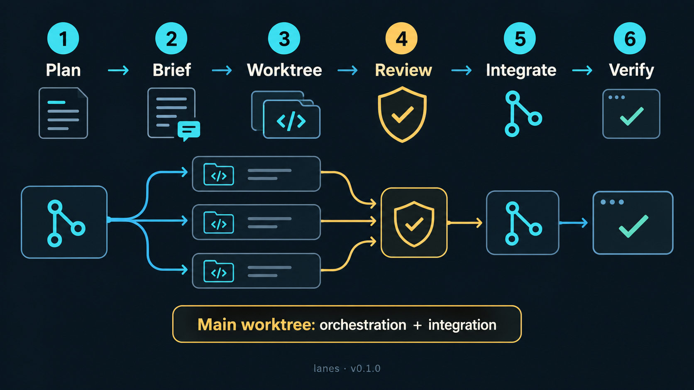
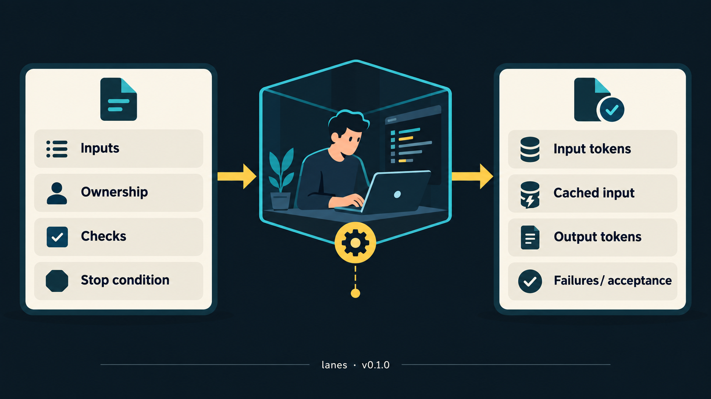

Claude Code + CodexSkill v0.1.0MIT licensedLinux & macOS
lanes
The right model for every task. The same gates for every change.
A multi-model orchestration skill for parallel software work. The orchestrator plans and reviews; each worker receives a short, complete task in its own Git worktree. The main worktree handles orchestration, planning and integration.
01 How it works
One orchestrator. Many lanes. The same gates.
The orchestrator plans, dispatches, reviews and integrates. Workers implement only in assigned worktrees and return compact evidence. The main worktree handles orchestration, planning and integration.




Lanes are worktrees
Each lane is a git worktree with one agent in it. Lanes run in parallel, up to a cap you choose (default 6 concurrent agents, reviews included).
Route by task
Sol at medium effort handles routine coordination. Opus 5.5 defaults to medium in Claude Code. Use high effort for legal meaning, security, difficult defects and final acceptance; use Luna or scripts for structural checks.
Gates don't change
Completion events lead to one deterministic check for hashes, check totals and unchanged files. An independent reviewer gates integration; the author never reviews its own work.
Per-task flow
- Brief the task with inputs, owned files, acceptance checks, limits and a stop condition.
- Implement in an assigned worktree and signal completion with the exit status.
- Run one reconciliation check for file hashes, check totals and unchanged files.
- Review independently. The author never reviews its own work.
- Integrate accepted changes in the main worktree, then update the tracker with evidence.
- Record usage and acceptance before closing the task.
Why the relay design (T1 lanes)
A Claude Code subagent file can't point at another provider: it has no baseUrl field, and model only takes Claude models.
So each external model (DeepSeek, GLM) runs as a separate headless Claude Code process pointed at that provider's Anthropic-compatible API (claude-via <provider>). A small guarded relay subagent hands tasks to it.
A PreToolUse hook (relay-guard) blocks every command except the relay itself; without it, the small relay model does the task itself instead of delegating.
Every run leaves a job record with the model that actually did the work.
v0.1.0 Release notes
Shorter tasks. Clearer evidence.
This release makes lane handoffs smaller and easier to verify.
Complete briefs
Workers receive inputs, exact ownership, acceptance checks, token limits and a stop condition. The main worktree stays focused on orchestration, planning and integration.
Compact proof
Completion events replace repeated status scans. One deterministic check reports hashes, check totals and unchanged files; routine summaries target 10–12 lines.
Recoverable sessions
Per-task usage records include input, cached input, output, failures and acceptance. `session-detail` archives preserve recovery context before each compaction.
02 Routing
Triage first. The tier picks the model.
Use Sol at medium effort for routine coordination and Opus 5.5 at medium effort as the Claude Code default. Raise effort for legal meaning, security, difficult defects and final acceptance. Use Luna or scripts for structural checks, and reserve DeepSeek and GLM for simple tasks.
| Tier / role | Lane | Billed to |
|---|---|---|
| High effortLegal meaning, security, difficult defects, or final acceptance | Codex Sol or Claude Opus 5.5 | your ChatGPT or Claude plan |
| T2 ModerateClear spec, but multi-file or needs design judgment | Codex Sol by default; sonnet-lane for delegated Claude coding |
your ChatGPT or Claude plan |
| Simple tasksWell-specified, self-contained implementation with clear checks | DeepSeek or GLM 5.3 Flash for bounded work | your DeepSeek / OpenRouter API keys |
| Structural checksCounts, hashes, format and unchanged-file checks | Codex Luna or a deterministic script | your ChatGPT plan |
| Routine reviewIndependent review and fix rounds | Codex Sol at medium effort | your ChatGPT plan |
| OrchestrationPlan, dispatch, report and integration | Codex Sol or Claude Opus 5.5, medium effort by default | your ChatGPT or Claude plan |
Recommended orchestration defaults are Codex Sol at medium effort and Claude Opus 5.5 at medium effort. Use high effort only for legal meaning, security, difficult defects and final acceptance. Each task brief states a token cap; short drafts stop at 500 output tokens. Record input, cached input, output, failures and acceptance in the lane usage ledger. Use completion events and one reconciliation check instead of repeated status scans. Model overrides: DEEPSEEK_MODEL, GLM_MODEL, CODEX_MODEL, CODEX_EFFORT.
- Review before mergeEvery change from any model gets an independent review. Fix rounds loop until CLEAN.
- Workers stay in worktreesDeepSeek and GLM never run in a checkout holding
.envor secrets. - No Codex? Still reviewed.Without the Codex CLI, reviews use Claude.
03 Install
Clone it into your skills folder.
The installer checks prerequisites and both keys, tells you exactly what to add if something is missing, and backs up any file it replaces.
git clone https://github.com/thebpandey/lanes ~/.claude/skills/lanes
bash ~/.claude/skills/lanes/install.sh # installs relays, configs, and the opus-lane/sonnet-lane/deepseek/glm/codex subagents
bash ~/.claude/skills/lanes/install.sh --smoke # optional: one tiny task through each provider
bash ~/.claude/skills/lanes/install.sh --watchdog # optional (Linux): timer that cleans orphaned agent workThen restart Claude Codeso the opus-lane, sonnet-lane, deepseek, glm and codex subagents load. Until then, the direct commands work without a restart.
What it installs
- In
~/.local/bin:claude-via,claude-deepseek,claude-glm,model-relay,relay-guardandcodex-review. ~/.claude/{deepseek,glm}.json, which hold the base URL, the model and the name of the key variable.~/.claude/agents/{opus-lane,sonnet-lane}.md: Opus lane at medium effort by default, with high for legal meaning, security, difficult defects and final acceptance; Sonnet handles delegated moderate coding. The other agents are guarded relays.
Requirements
- RequiredClaude Code,
git,python3,curlandbashon Linux or macOS. The watchdog timer is Linux/systemd only. - Key
DEEPSEEK_API_KEY: create one at platform.deepseek.com. - Key
OPENROUTER_API_KEY: create one at openrouter.ai/keys. Set a spend limit, and under Privacy block providers that train on prompts. - OptionalThe Codex CLI (
npm i -g @openai/codex, thencodex login) for Codex reviews. Without it, reviews use Claude. - OptionalDocker, for disposable test databases. Beads (
bd) for issue tracking.
Export keys in your shell rc. Never paste a key into the chat; the skill never writes one anywhere.
04 Use
Say it in any git project.
Start Claude Code in the project and talk to the orchestrator. Status updates focus on completion events and changed lane states.
- /lanes start
Audits the project (instructions, git history, worktrees, tracker), shows what's done, in progress, ready and blocked, triages each task into a tier, asks a few setup questions one at a time, then runs the lanes.
- lane update
Blockers, completed events and changed lane states in a compact 10–12-line summary.
- lane update all
A concise view of every workstream task and its current state.
- pause lanes · resume the lanes
Safe pause notes per lane, and resuming into the same worktrees.
Direct commands no Claude tokens
Run from the shell. Model overrides: DEEPSEEK_MODEL, GLM_MODEL, CODEX_MODEL; set CODEX_EFFORT=high for high-risk review. To add another Anthropic-compatible provider, drop a ~/.claude/<name>.json next to the others.
cd <worktree> && RELAY_WAIT_S=6000 model-relay deepseek < brief.md # or: model-relay glm
cd <worktree> && RELAY_WAIT_S=6000 codex-review main < checklist.md
~/.claude/skills/lanes/lane/new-worktree.sh <branch> # worktree + monorepo node_modules wiring
~/.claude/skills/lanes/lane/lane-status.sh # evidence table for "lane update"05 Safety notes
Read these before the first run.
Data leaves your machine
DeepSeek and GLM receive whatever the task gives them, and run with full shell access inside their worktree, with
.envreads denied. Run them only in worktrees, and never give them secrets, credentials or customer data.Costs
total_cost_usdin a worker's output is priced as if the run were Claude, so ignore it. Check your real spend on the DeepSeek balance page and onhttps://openrouter.ai/api/v1/key.Self-identification
Workers call themselves "Claude" because Claude Code's system prompt says so. The job record's
model:line shows the real model.Approvals
The skill asks before pushes, deploys, external writes, and anything hard to undo.
06 Uninstall
Three lines to remove it all.
rm -f ~/.local/bin/{claude-via,claude-deepseek,claude-glm,model-relay,relay-guard,codex-review}
rm -f ~/.claude/{deepseek,glm}.json ~/.claude/agents/{deepseek,glm,codex,opus-lane,sonnet-lane}.md
systemctl --user disable --now lanes-watchdog.timer 2>/dev/null; rm -rf ~/.claude/skills/lanes